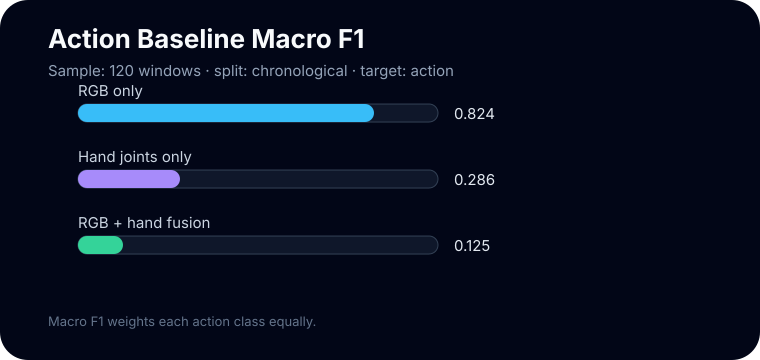

RGB accuracy with chronological evaluation. Appearance still carries the strongest signal in this short run.
First-person video · action recognition · ablation
How does a model read an egocentric action?
Start with a coffee-making episode. Slice it into short windows. Turn video frames and hand joints into features. Train three baselines and compare what each signal contributes.
Sample Run
120 windows · 2 action classes · 30 evaluation windows
The numbers below check the pipeline on one episode. They are not a multi-episode benchmark.
Learning Path
1. Window
Group nearby frames so the model can see motion and task progress.
2. Feature
Convert RGB frames and hand joints into compact numeric vectors.
3. Classifier
Train a softmax model that maps each window to an action label.
4. Evaluate
Compare accuracy and F1 to understand strengths and failure modes.
1. RGB baseline
Uses appearance: color, texture, coarse layout, and changes across sampled frames.
2. Hand baseline
Uses 3D hand-joint motion, which is often a strong cue for intent.
3. Fusion baseline
Concatenates visual context with hand motion before classification.
RGB baseline
RGB asks whether the scene itself reveals the action. For pour-over coffee, kettle position and dripper context can be highly informative.
Ablation Result

Key Terms In One Minute
Accuracy: the fraction of windows classified correctly.
What The Sample Teaches
0.700
0.286
Hand-only macro F1. Time-held-out windows reveal that hand motion alone is harder to generalize from one episode.
Because the sample is one episode, treat the result as a clear pipeline demonstration. For a benchmark, add more episodes and split by held-out episode.
Concepts, Explained Visually
Click a term to see how it appears in this repo. Each explanation connects the ML idea to the coffee-making episode.
Temporal window
A temporal window is like watching a few seconds of motion instead of judging from a single photo. The model can see reaching, grasping, lifting, and pouring as short sequences.
Run This Locally
1. Clone the repository.
2. Set
DATA_ROOT.3. Install
pip install -e ".[dev]".4. Run the ablation CLI.
Softmax baseline
ego-action-ablation --data-root "$DATA_ROOT" --output-dir outputs/sample_ablation
Softmax + MLP comparison
ego-action-ablation --data-root "$DATA_ROOT" --model both --epochs 300
Artifact Preview
{
"split_strategy": "chronological",
"experiments": {
"rgb_only": {"accuracy": 0.70, "macro_f1": 0.824},
"rgb_hand_fusion_mlp": {"model": "mlp"}
}
}